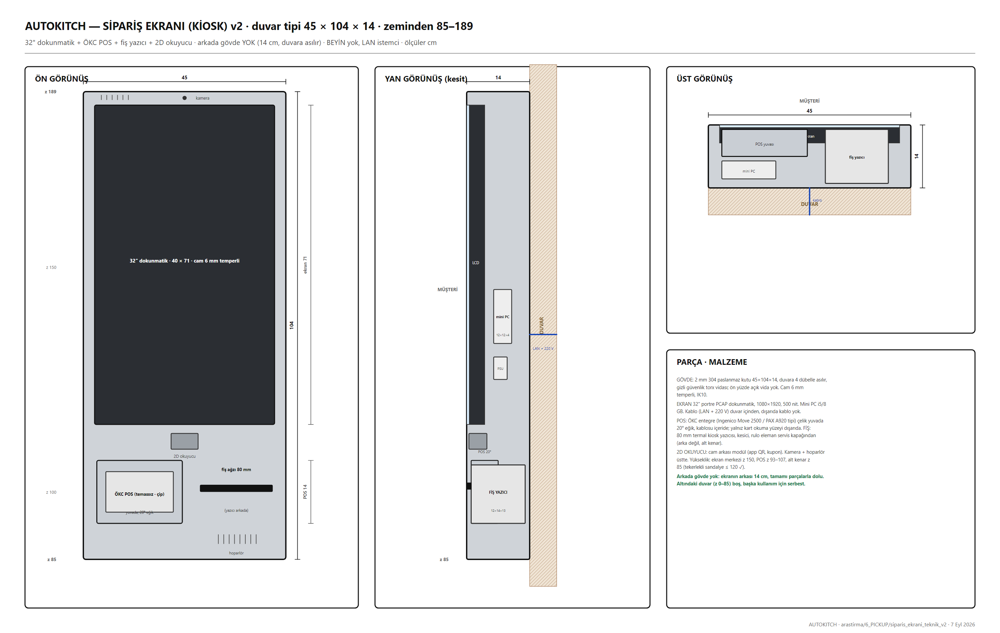

32" dokunmatik, ÖKC entegre POS, 80 mm fiş, 2D okuyucu. SERVICE dolabının sokak yüzüne asılı, BEYİN yok (LAN istemci).

| Tedarikçi / ürün | Ne | Fiyat / durum |
|---|---|---|
| KioSelf | yerli üretim self servis kiosk | teklif |
| Onega Zenyo KSK-3200 | 32", i5, 2D okuyucu, 80 mm yazıcı | teklif |
| İnnova · Kardo POS · Novem · PandaX · Menulux · Posgo · robotPOS | kiosk + yazılım | ≈ 40–120 bin TL (ekran + POS; POS kirası bankayla anlaşmaya bağlı) |
| Ingenico / PAX / Hugin | ÖKC entegre POS | banka |
| # | Problem | Durum | Çözüm / not |
|---|---|---|---|
| D8 | Sipariş ekranı ayrı, kuryeyi bloke etmesin | ÖNERİ VAR | ayrı birim, SERVICE sırtında |
| D9 | ÖKC / fiş, kağıtsız | AÇIK | mali müşavir |
| — | Yazılım–BEYİN API | AÇIK | sipariş JSON, dolap no geri |